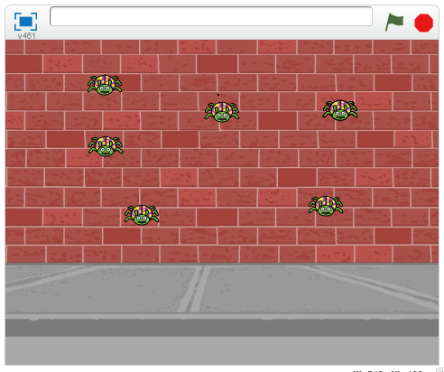
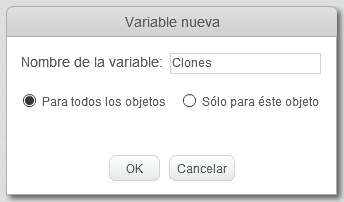
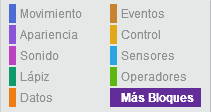
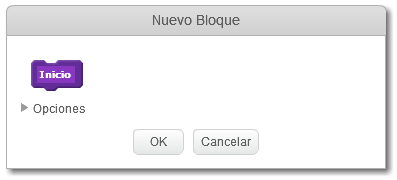
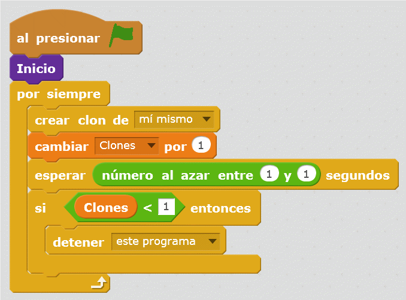
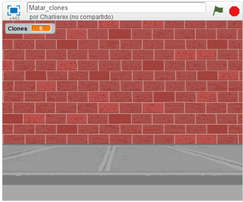
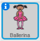
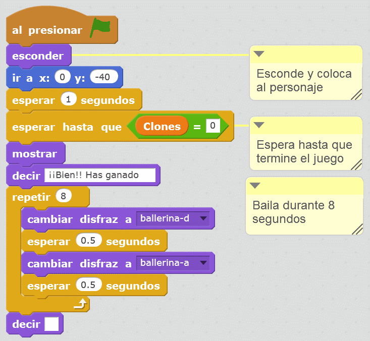

4. Catch bugs¶
{kind=link}
In this practice we are going to program a game that consists of catching all the beetles that appear on the screen. Once trapped, we win the game and a character tells us about it.
We start the Scratch editor.
We delete the cat by clicking on it with the right mouse button and then pressing delete.

Next we add a new character, a beetle.
Press the new object button
Then click on Animals Category.
Then we select the Ladybug2 object.

Now we will create the variable Clones
Within the Data tab,
press create a variable

We change the name of the variable to Clones
Finally we press the button OK
This variable will count the number of beetles on the screen. When this variable is equal to zero, the game will end.
In the program tab we will create a new function called Start
First click on the button more blocks

Then click on create a block

Then we change the name of the new block to Home
Finally we press the button OK
Now we program the Start function with the following commands.

This program hides the beetle, clears the screen, and places five clones of the beetle on the screen.
At this point we add the instructions so that each clone of the beetle appears in a different place on the screen with small size. When the mouse pointer touches a beetle, it will disappear.

To check that everything works correctly, double-click start and five beetles will appear on the screen. The beetles should disappear when the mouse pointer touches them.
In order for the game to work normally, we programmed the function that will spawn beetles from time to time until the game ends.
Now we have to choose a suitable background for the game. Changed the background to a street wall.
Click on the New Background button.

Then click on City Theme.
Then we select the background brick wall 1.
The screen will be as follows.
Finally we are going to program a character that warns of the end of the game. In this case, a dancer has been chosen.
Press the new object button
Then click on People Category.
Then we select the Ballerina object.

In the program tab of the new character
We add the following instructions.
Now at the end of the program the dancer will appear to congratulate us.
{kind=link}
{kind=link}
Exercises¶
- Add a new rule to the game. If the number of beetles is greater than 25, then we lose the game. The program stops and a new character tells us that we have lost.